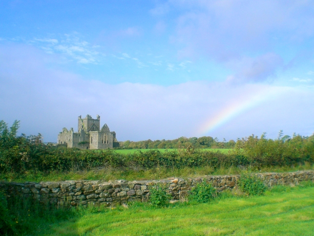

Irlanda

El país posee una identidad única y las ricas tradiciones históricas de Irlanda le otorgan un atractivo especial. También es un destino turístico muy popular, por lo tanto cuando se estudia en alguna de sus grandes ciudades como Dublin se observa una mezcla de turistas y de gente local en igual medida. Los estudiantes internacionales de Irlanda, tienen la oportunidad de conocer la música escénica irlandesa, su rica tradición en la narración de cuentos, sus comidas abundantes, la cultura gaélica; y disfrutar de sus maravillosos, exuberantes y variados paisajes.
Música irlandesa
El pueblo irlandés es apasionado por la música y hay que estar preparado para mantener los oídos abiertos a las diversas formas de su música durante la estadía en Irlanda. No hay que sorprenderse si se descubren sesiones improvisadas en pubs, donde la música tradicional se mantiene viva y festejada.
Irlanda ha cobijado a una gran cantidad de talentos musicales y creativos, entre ellos a U2, The Dubliners, Van Morrison, The Pogues, Damien Rice y The Chieftains. Nos brinda la oportunidad de conocer una variedad de estilos de música irlandesa en conciertos por todo el país. Para los amantes de la música, Irlanda es un extraordinario lugar para experimentar el ámbito social estudiantil.
Paisajes irlandeses
La República de Irlanda es llamada la Isla Esmeralda por algún motivo. Es reconocida por sus espectaculares escenarios y sus ondulantes colinas, desde los maravillosos acantilados de Moher en el Condado Clare hasta el Ring of Kerry en la península de Iveragh. Ofrece un gran escape de la vida urbana y aquellos que optan por estudiar en alguna de las ciudades de Irlanda, siempre tienen la oportunidad de tomarse un fin de semana para viajar a la campiña. Irlanda también se enorgullece por poseer algunas de las mejores playas de Europa que conservan su belleza natural.
Creatividad irlandesa
La influencia de la mitología celta, la poesía y la narración de cuentos ha invadido la cultura irlandesa y la contribución irlandesa a la literatura universal es significativa. Irlanda es cuna de algunos de los maestros más excelsos de la literatura universal, entre ellos Yeats, George Bernard Shaw, Beckett, James Joyce y el poeta Seamus Heaney.
Ciudades de Irlanda
Cada una de las zonas urbanas de Irlanda posee un carácter propio, desde el vibrante encanto de Dublin con su cantidad de bares, restaurantes e insólitas boutiques, hasta la encantadora variedad de festivales y comidas que pueden disfrutarse en Galway. Las ciudades más grandes de Irlanda son cosmopolitas y con mucha vida nocturna, con una cordialidad que a veces no se encuentra en otras ciudades del mundo.
Irlanda apuesta por las tecnologías de la información
El Gobierno irlandés se ha propuesto confirmar su posición como la capital de Internet en Europa. Las tecnologías de la información y comunicación son el sector que actualmente ofrece mayores posibilidades y el ministro de trabajo irlandés, Richar Bruton, prevé 44.000 vacantes en los próximos cinco años.
Para poder hacer frente a las demandas de este sector el Gobierno... Leer más...
Irlanda el Silicon Valley de Europa
Considerado como el centro más importante de localización de software dentro de Europa y con un crecimiento de empleo en el sector informático del 117 por ciento previsto para el 2003, Irlanda se presenta como el Silicon Valley europeo, centro neurálgico del desarrollo de las nuevas tecnologías.
Con una población cercana a los cuatro millones de habitantes, la verde Irlanda... Leer más...
Irlanda, el paraíso de Apple
Apple, la empresa con mayor valor de mercado del mundo, utiliza a un grupo de compañías afiliadas en Irlanda para evitar el pago de miles de millones de dólares en impuestos por ingresos en Estados Unidos, de acuerdo con una investigación del Senado.
Apple tiene en el extranjero casi 102,000 millones de dólares de sus 145,000 millones que tiene en efectivo, y una subsidiaria irlandesa que en 2011 tuvo ingresos por... Leer más...

 Facebook
Facebook Twitter
Twitter Google+
Google+